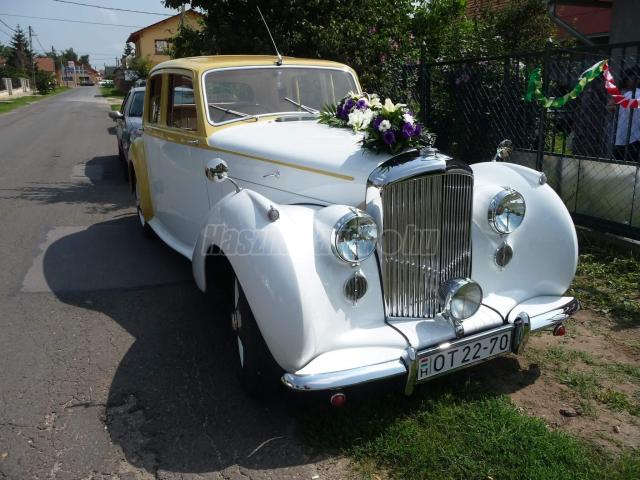

BENTLEY MK 6 FIVA

Leírás:
Ár:19 900 000 Ft
Évjárat:1949/2
Kivitel:Ferdehátú
Kilométeróra állása: 15 000 km
Teljes tömeg: ---
Hengerűrtartalom: 4 257 cm3
Teljesítmény: ---
Sebességváltó fajtája: Manuális
Volkswagen